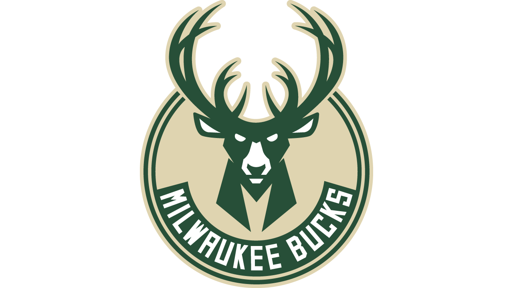
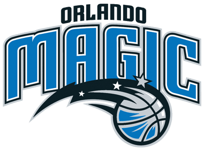
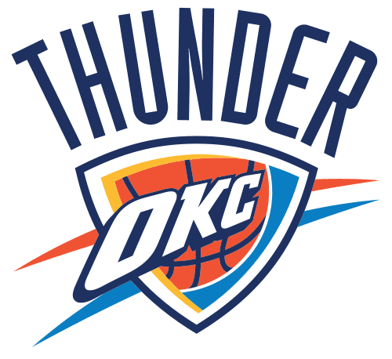
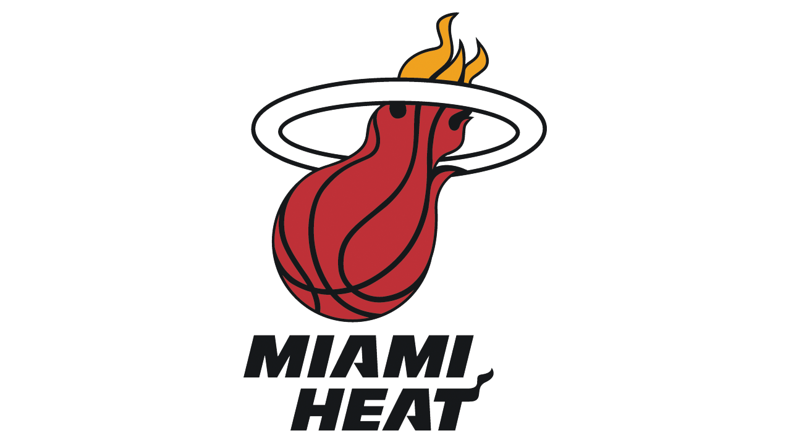
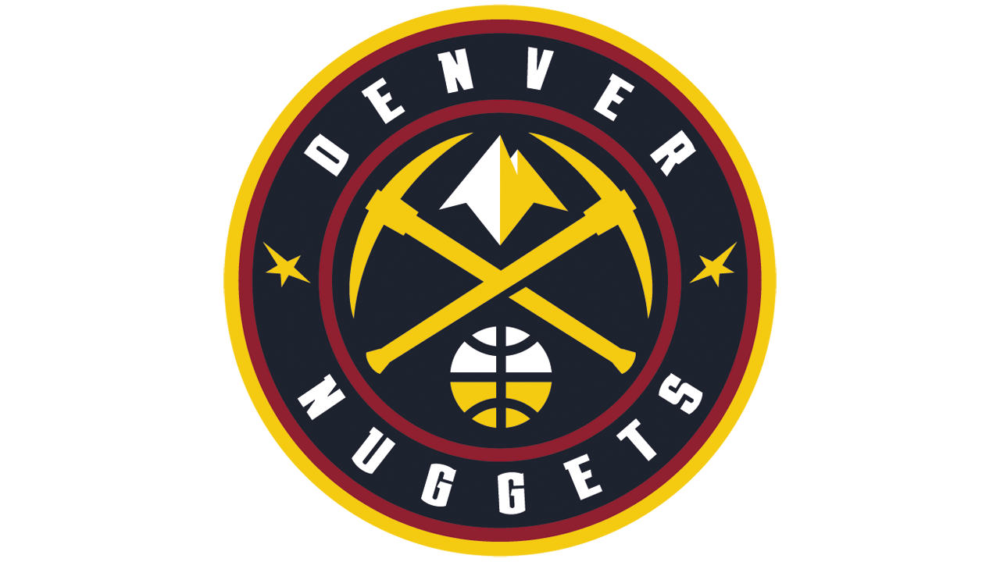
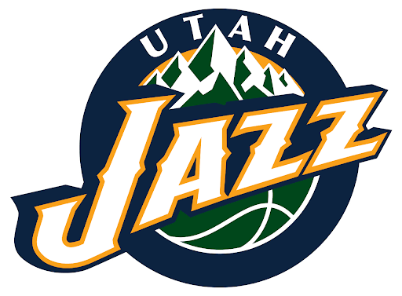
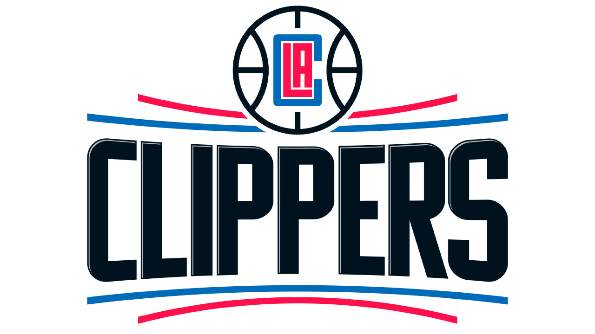
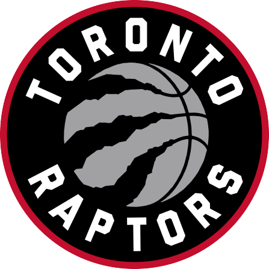
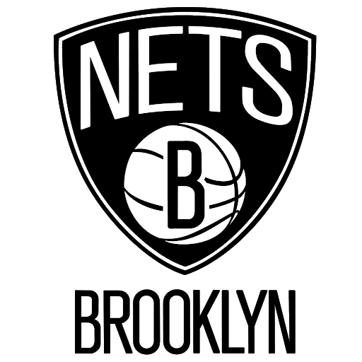

Los Playoffs de la NBA son 4 rondas de competición entre dieciséis equipos repartidos en la Conferencia Oeste y la Conferencia Este. Los ganadores de la Primera ronda (o cuartos de final de conferencia) avanzan a las Semifinales de Conferencia, posteriormente a las Finales de Conferencia y los vencedores a las Finales de la NBA, disputadas entre los campeones de cada conferencia.
1947: Los playoffs comenzaron como un torneo a tres eliminatorias; los dos mejores equipos se encontraban en las semifinales (al mejor de tres partidos), mientras que los equipos clasificados en el segundo y tercer puesto de su respectiva división se encontraban en los cuartos de final (a tres partidos). Los ganadores de los cuartos de final disputaban las semifinales. Los ganadores de esta serie se jugaban el campeonato en las Finales de la BAA al mejor de siete partidos.
1949: Los cuartos de final y semifinales fueron renombrados a Semifinales de División y Finales de División, respectivamente; las Semifinales de División ahora consistían en los 4 primeros equipos de cada división, y se mantenía el formato al mejor de tres partidos.
En la actualidad todas las series de los playoffs son al mejor de 7 partidos
Comienzan a finales de abril, con ocho equipos de cada conferencia clasificados. Hasta la temporada 2005-2006, los tres primeros puestos de cada conferencia venían determinados por los primeros clasificados en cada división, siguiendo a su vez el balance victorias-derrotas. Esta regla ha generado mucha controversia, ya que se consideraba que algunos equipos con un mal récord tenían la posibilidad de avanzar con relativa facilidad en los playoffs (por ejemplo, si en una división se encuentran los dos mejores récords de la conferencia, el 2º lugar en cuanto a récord, pasa a ser el 4º en la tabla de posiciones; así, de avanzar en la primera ronda, sería casi seguro que enfrentara al 1º lugar, mientras que los lugares 2º y 3º de la tabla tienen mejores opciones de avanzar aunque no tengan buenos récords).
A partir de la temporada 2006-2007, los primeros cuatro equipos, los tres campeones de división y el mejor segundo, son emparejados tomando en cuenta el total de partidos ganados y perdidos, de modo que los dos mejores equipos de cada conferencia no se enfrenten sino hasta la final del campeonato. La posición de los cuatro equipos restantes viene determinada por el porcentaje de victorias de cada uno de ellos. El ser campeón de división no garantiza tener la ventaja de campo en las eliminatorias de los playoffs, algo insólito en los deportes estadounidenses. La ventaja de campo está estrictamente basada en el balance de victorias-derrotas durante la temporada regular, sin respetar a los ganadores de división.
Las series de playoffs siguen un formato de competición. Cada eliminatoria es al mejor de siete partidos, avanzando de serie el primero que gane cuatro partidos, mientras que el perdedor es eliminado de los playoffs. En la siguiente ronda, el equipo ganador juega contra otro de su misma conferencia. Así, todos excepto uno son eliminados de los playoffs en cada conferencia. En cada ronda se sigue el modelo 2-2-1-1-1,1 queriendo decir que el equipo que tenga la ventaja de campo jugará en casa los partidos 1, 2, 5 y 7, mientras que su rival lo hará en los partidos 3, 4 y 6.
En la ronda final, se enfrentan los campeones de cada conferencia al mejor de siete partidos. El primero que consiga vencer en cuatro partidos, se le conocerá como el campeón de la NBA. Se disputa anualmente en junio, y al campeón se le galardona con el Larry O'Brien Championship Trophy. La idea de llamar al trofeo de campeón Larry O'Brien, es en honor al comisionado de la NBA que precedió a David Stern, Larry O'Brien. A cada jugador del equipo victorioso, además del entrenador y el general mánager, se le entrega un anillo de campeón. Además, la liga entrega el premio MVP de las Finales, que normalmente recibe un jugador del equipo ganador, aunque esto no sea una norma. Solo ha habido una excepción hasta la fecha: Jerry West recibió el MVP de las Finales en 1969 (primera temporada en la que se entregaba este premio) a pesar de que los Lakers no ganaron el anillo.
Tras un regreso a todo ritmo en los seeding games, el campus de Walt Disney World se viste de gala para los Playoffs, que prometen emoción rumbo a la coronación del campeón. Es hora de prenderse a la pantalla para disfrutar del mejor básquet del mundo y, como siempre, habrá múltiples opciones de televisados. Los detalles.
Después de muchos meses de incertidumbre desde aquella noche del 11 de marzo, donde la temporada 2019-2020 quedaba suspendida por el avance del coronavirus COVID-19, ha llegado la hora de disfrutar nuevamente de la etapa más emocionante de la NBA. La reanudación del curso en Walt Disney World fue a todo ritmo con los seeding games, y ya es hora de volver a mirar hacia la pantalla para vivir la emoción y magia de las estrellas en los Playoffs.
| Conferencia OESTE | Conferencia ESTE |
|---|---|
| Milwaukee Bucks | |
|  Orlando Magic | |
| Oklahoma City Thunder | Miami Heat |
| Denver Nuggets | Boston Celtics |
| Utah Jazz | |
| Los Angeles Clippers | Toronto Raptors |
| Brooklyn Nets |
Para mas informacion: Click aqui